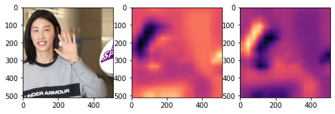
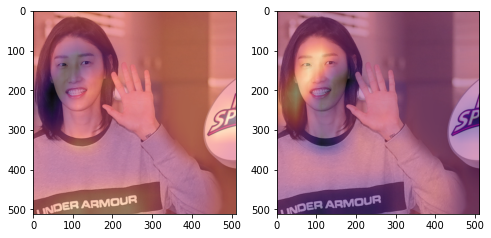
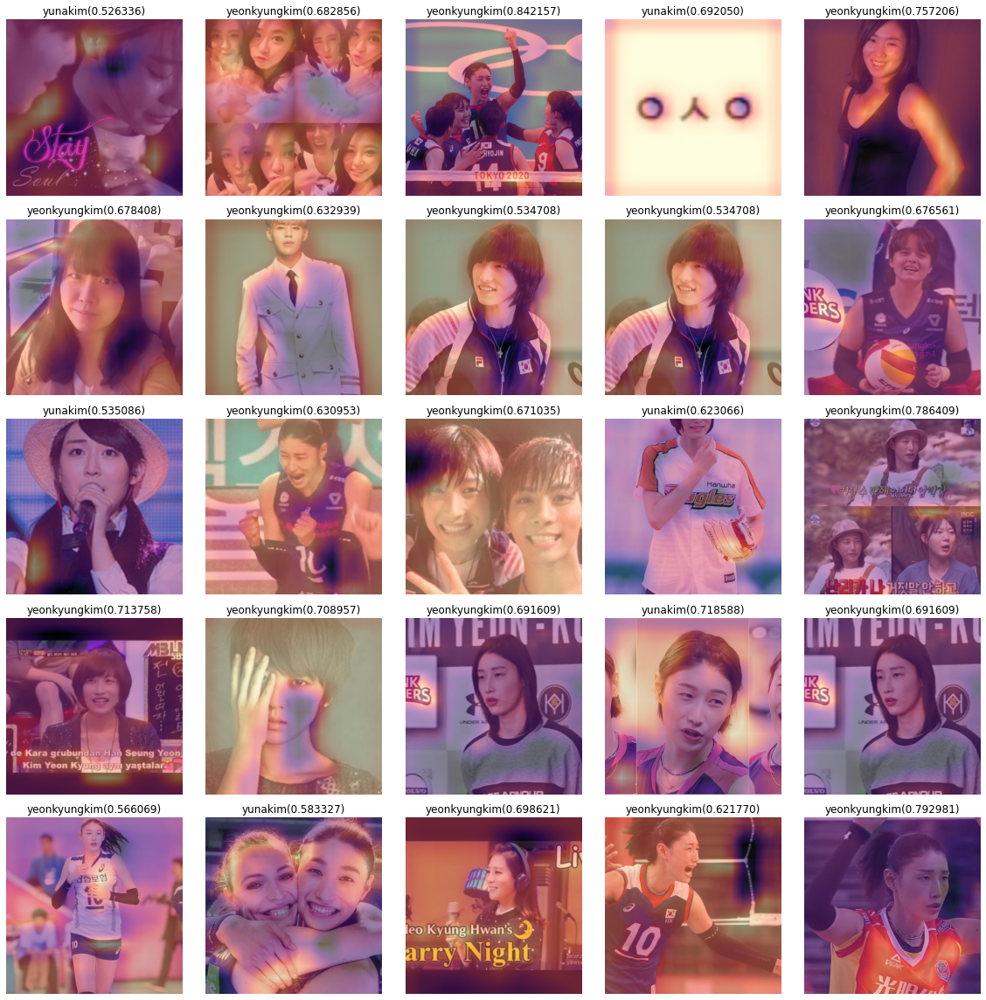
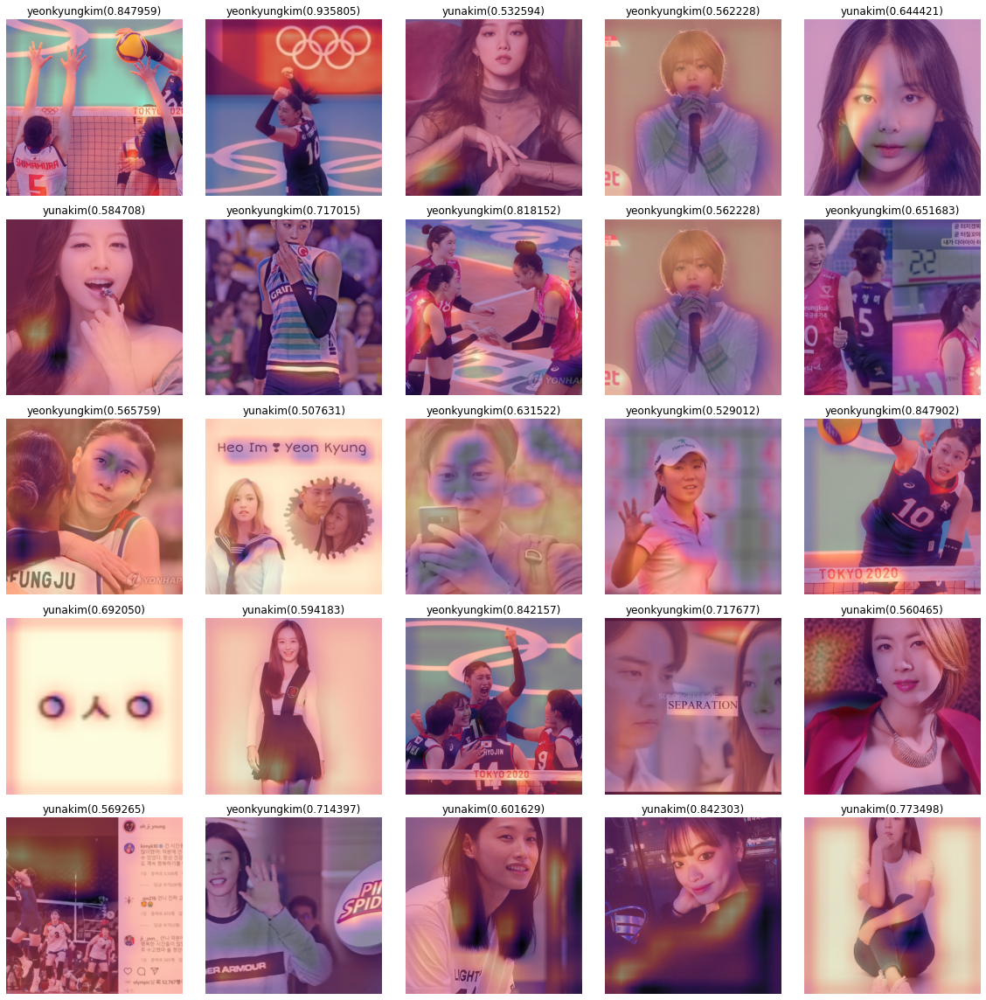
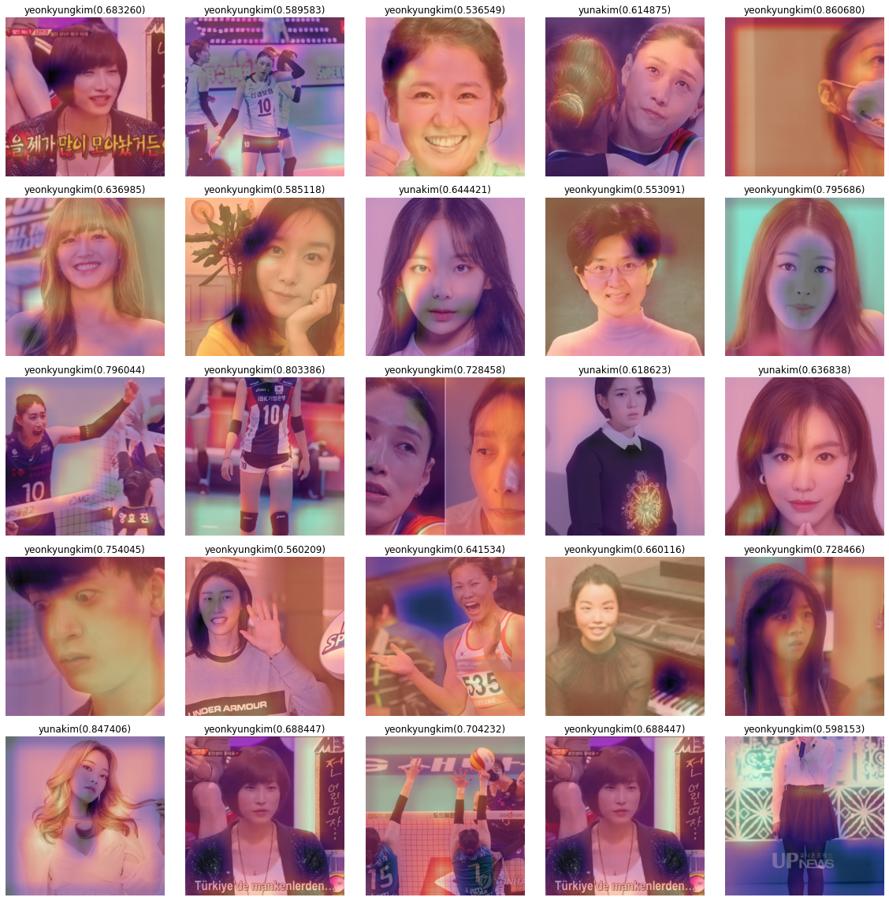
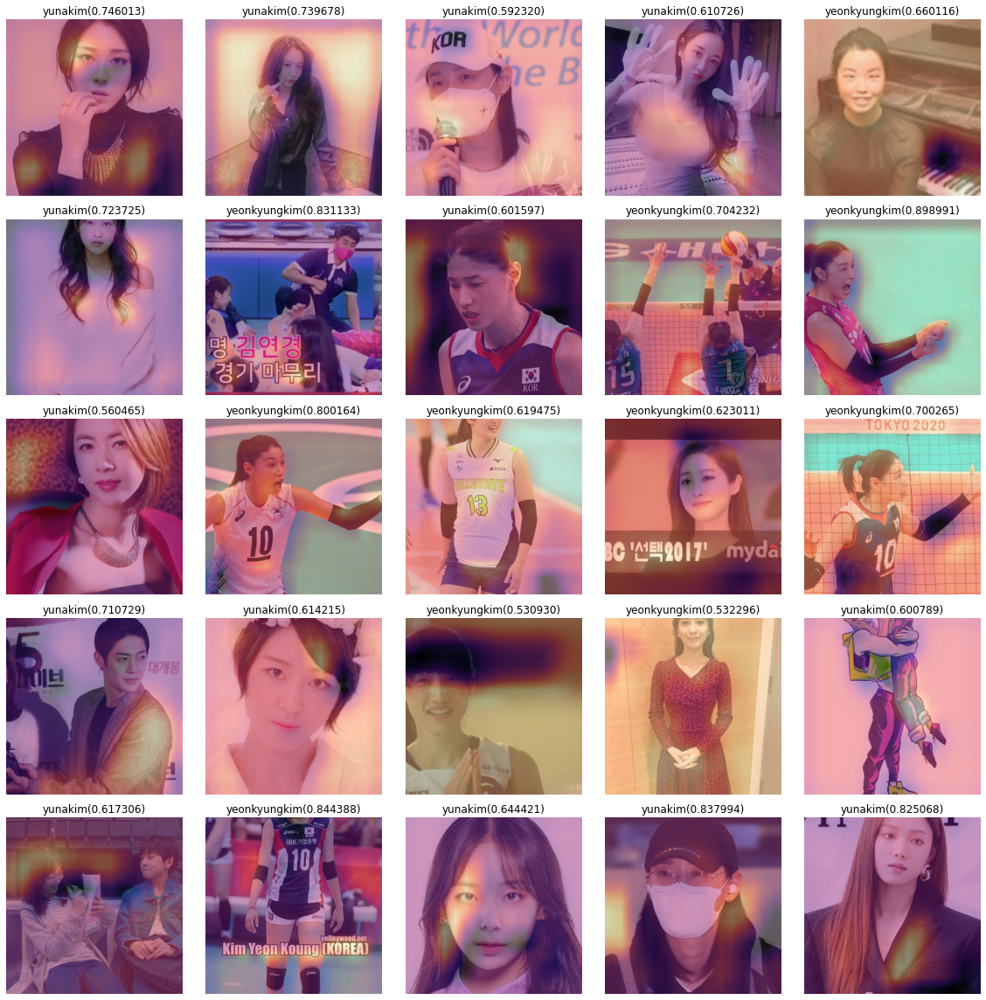
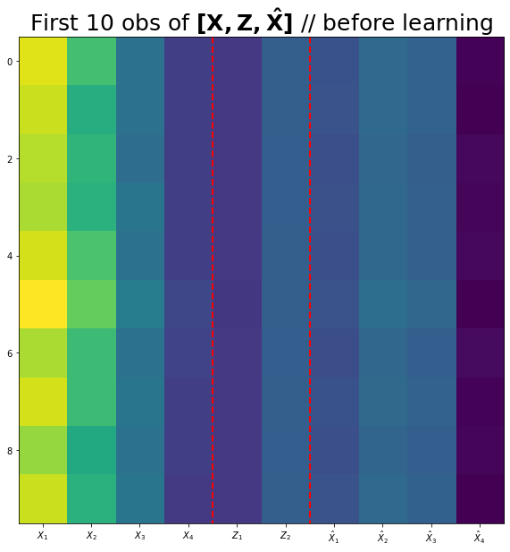
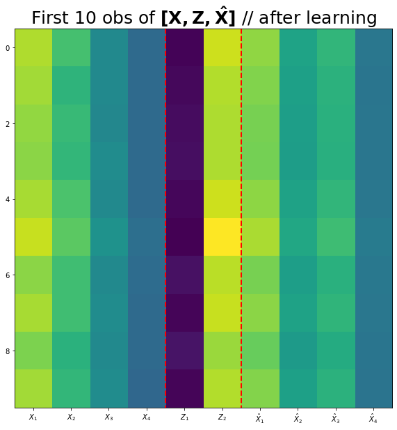

1. 크롤링을 통한 이미지 분석 및 CAM
#
# 크롤링에 필요한 준비작업들
!pip install -Uqq duckduckgo_search
from duckduckgo_search import ddg_images
from fastdownload import download_url
from fastcore.all import *
def search_images(term, max_images=200): return L(ddg_images(term, max_results=max_images)).itemgot('image')ERROR: pip's dependency resolver does not currently take into account all the packages that are installed. This behaviour is the source of the following dependency conflicts.
flask 1.1.4 requires click<8.0,>=5.1, but you have click 8.1.3 which is incompatible.#
# 폴더만드는코드 -- 사실 손으로 만들어도 무방함..
!mkdir images
!mkdir images/train
!mkdir images/test
!mkdir images/train/Harry Potter
!mkdir images/train/Ronald Bilius Weasley
!mkdir images/test/Harry Potter
!mkdir images/test/Ronald Bilius Weasleymkdir: cannot create directory ‘images’: File exists
mkdir: cannot create directory ‘images/train’: File exists
mkdir: cannot create directory ‘images/test’: File exists
mkdir: cannot create directory ‘Potter’: File exists
mkdir: cannot create directory ‘Bilius’: File exists
mkdir: cannot create directory ‘Weasley’: File existsdownload_images(dest='./images/train/Harry Potter',urls=search_images('Harry Potter',max_images=200))
time.sleep(10) # 서버과부하를 위한 휴식코드
download_images(dest='./images/train/Ronald Bilius Weasley',urls=search_images('Ronald Bilius Weasley',max_images=200))
time.sleep(10) # 서버과부하를 위한 휴식코드
download_images(dest='./images/train/Harry Potter',urls=search_images('Harry Potter movie',max_images=200))
time.sleep(10) # 서버과부하를 위한 휴식코드
download_images(dest='./images/train/Ronald Bilius Weasley',urls=search_images('Ronald Weasley',max_images=200))
time.sleep(10) # 서버과부하를 위한 휴식코드 (#62) [Path('images/train/Harry Potter/d75f9d42-7db5-418a-bc65-8a10c4dd6df3.jpg'),Path('images/train/Harry Potter/fbdce828-967e-4ee0-99dc-74b065cec931.jpg'),Path('images/train/Harry Potter/f2216c3c-9d40-4551-8dbc-0812b61be308.jpg'),Path('images/train/Harry Potter/72319413-8aed-4ff8-bd15-9247c9e6b9fc.jpg'),Path('images/train/Harry Potter/5a5656d6-b298-43f1-88dd-526eb597258a.jpg'),Path('images/train/Harry Potter/cfa5a057-4bbe-43a1-9bdd-7e6214fef746.jpg'),Path('images/train/Harry Potter/6902097c-8e55-4fc7-b5c8-aa6cb88a287e.jpg'),Path('images/train/Harry Potter/e1af5803-a0f0-4311-9c54-95b1506ee512.jpg'),Path('images/train/Harry Potter/1a6e2dd5-d8d0-4220-969f-05aa234af09d.jpg'),Path('images/train/Harry Potter/506feddc-f171-4808-9643-66183bc85d6d.jpg')...]| epoch | train_loss | valid_loss | accuracy | time |
|---|---|---|---|---|
| 0 | 1.944444 | 1.663112 | 0.458763 | 01:01 |
| epoch | train_loss | valid_loss | accuracy | time |
|---|---|---|---|---|
| 0 | 1.539615 | 1.090526 | 0.567010 | 01:03 |
0.00% [0/1 00:00<?]
| epoch | train_loss | valid_loss | accuracy | time |
|---|
0.00% [0/140 00:00<?]
RuntimeError: ignored- 0.2771>0.0421 이므로 ximg는 yenkyungkim일 확률이 더 높다.
(TensorImage(0.2771, device='cuda:0', grad_fn=<AliasBackward0>),
TensorImage(0.0351, device='cuda:0', grad_fn=<AliasBackward0>))TensorImage([[ 0, 0, 0, 0, 0, 0, 0, 0, 0, 0, 0, 0, 0, 0, 0, 0],
[ 0, 0, 0, 0, 0, 0, 0, 0, 0, 0, 1, 1, 1, 1, 0, 0],
[ 0, 0, 0, -1, 0, 0, 0, 0, 0, 0, 1, 1, 1, 1, 0, 0],
[ 0, 0, -2, -3, -2, -1, 0, 0, 0, 0, 1, 1, 1, 1, 0, 0],
[ 0, -1, -3, -3, -1, 0, 0, 0, 0, 0, 1, 1, 1, 1, 0, 0],
[ 0, -3, -3, -2, 0, 1, 0, 0, 0, 0, 1, 1, 1, 1, 0, 0],
[-1, -4, -3, 0, 0, 0, 0, 0, 0, 0, 0, 1, 1, 1, 0, 0],
[-2, -3, -1, 0, 0, 0, 0, 0, 0, 0, 0, 1, 1, 1, 0, 1],
[-1, -2, -1, 0, 0, 0, 0, 0, 0, 0, 0, 1, 1, 1, 1, 3],
[ 0, 0, 0, 0, 0, 0, 0, 0, 0, 0, 0, 0, 1, 1, 2, 2],
[ 0, 0, 0, 1, 1, 0, 0, 0, 0, 0, 0, 0, 1, 0, 0, 0],
[ 0, 0, 0, 0, 0, 0, 0, 0, 0, 0, 0, 0, 0, 0, 0, 0],
[ 0, 0, 0, 0, 0, 0, 0, 0, 0, 0, 0, 0, 0, 0, 0, 0],
[ 0, 0, 0, 0, 0, 0, 0, 0, 0, 0, 0, 0, 0, 0, 0, 0],
[ 0, 0, 1, 1, 1, 1, 1, 1, 1, 0, 0, 0, 0, 0, 0, 0],
[ 0, 1, 2, 2, 1, 2, 2, 2, 1, 0, 0, 0, 0, 0, 0, 0]],
device='cuda:0')fig, ax = plt.subplots(1,3,figsize=(8,4))
ax[0].imshow(torch.einsum('ocij -> ijc',dls.decode((x,))[0]).to("cpu"))
ax[1].imshow(why_yeonkyungkim.to("cpu").detach(),cmap='magma',extent=(0,511,511,0),interpolation='bilinear')
ax[2].imshow(why_yunakim.to("cpu").detach(),cmap='magma',extent=(0,511,511,0),interpolation='bilinear')<matplotlib.image.AxesImage at 0x7f48ffaa2ad0>
fig, ax = plt.subplots(1,2,figsize=(8,4))
ax[0].imshow(torch.einsum('ocij -> ijc',dls.decode((x,))[0]).to("cpu"))
ax[0].imshow(why_yeonkyungkim.to("cpu").detach(),cmap='magma',extent=(0,511,511,0),interpolation='bilinear',alpha=0.5)
ax[1].imshow(torch.einsum('ocij -> ijc',dls.decode((x,))[0]).to("cpu"))
ax[1].imshow(why_yunakim.to("cpu").detach(),cmap='magma',extent=(0,511,511,0),interpolation='bilinear',alpha=0.5)<matplotlib.image.AxesImage at 0x7f4844ce5d10>
fig, ax = plt.subplots(5,5)
k=0
for i in range(5):
for j in range(5):
x, = first(dls.test_dl([PILImage.create(get_image_files(path)[k])]))
why = torch.einsum('cb,abij -> acij', net2[2].weight, net1(x))
why_yeonkyungkim = why[0,0,:,:]
why_yunakim = why[0,1,:,:]
catprob, dogprob = sftmax(net(x))[0][0].item(), sftmax(net(x))[0][1].item()
if catprob>dogprob:
dls.train.decode((x,))[0].squeeze().show(ax=ax[i][j])
ax[i][j].imshow(why_yeonkyungkim.to("cpu").detach(),alpha=0.5,extent=(0,511,511,0),interpolation='bilinear',cmap='magma')
ax[i][j].set_title("yeonkyungkim(%2f)" % catprob)
else:
dls.train.decode((x,))[0].squeeze().show(ax=ax[i][j])
ax[i][j].imshow(why_yunakim.to("cpu").detach(),alpha=0.5,extent=(0,511,511,0),interpolation='bilinear',cmap='magma')
ax[i][j].set_title("yunakim(%2f)" % dogprob)
k=k+1
fig.set_figwidth(16)
fig.set_figheight(16)
fig.tight_layout()
fig, ax = plt.subplots(5,5)
k=25
for i in range(5):
for j in range(5):
x, = first(dls.test_dl([PILImage.create(get_image_files(path)[k])]))
why = torch.einsum('cb,abij -> acij', net2[2].weight, net1(x))
why_yeonkyungkim = why[0,0,:,:]
why_yunakim = why[0,1,:,:]
catprob, dogprob = sftmax(net(x))[0][0].item(), sftmax(net(x))[0][1].item()
if catprob>dogprob:
dls.train.decode((x,))[0].squeeze().show(ax=ax[i][j])
ax[i][j].imshow(why_yeonkyungkim.to("cpu").detach(),alpha=0.5,extent=(0,511,511,0),interpolation='bilinear',cmap='magma')
ax[i][j].set_title("yeonkyungkim(%2f)" % catprob)
else:
dls.train.decode((x,))[0].squeeze().show(ax=ax[i][j])
ax[i][j].imshow(why_yunakim.to("cpu").detach(),alpha=0.5,extent=(0,511,511,0),interpolation='bilinear',cmap='magma')
ax[i][j].set_title("yunakim(%2f)" % dogprob)
k=k+1
fig.set_figwidth(16)
fig.set_figheight(16)
fig.tight_layout()
fig, ax = plt.subplots(5,5)
k=50
for i in range(5):
for j in range(5):
x, = first(dls.test_dl([PILImage.create(get_image_files(path)[k])]))
why = torch.einsum('cb,abij -> acij', net2[2].weight, net1(x))
why_yeonkyungkim = why[0,0,:,:]
why_yunakim = why[0,1,:,:]
catprob, dogprob = sftmax(net(x))[0][0].item(), sftmax(net(x))[0][1].item()
if catprob>dogprob:
dls.train.decode((x,))[0].squeeze().show(ax=ax[i][j])
ax[i][j].imshow(why_yeonkyungkim.to("cpu").detach(),alpha=0.5,extent=(0,511,511,0),interpolation='bilinear',cmap='magma')
ax[i][j].set_title("yeonkyungkim(%2f)" % catprob)
else:
dls.train.decode((x,))[0].squeeze().show(ax=ax[i][j])
ax[i][j].imshow(why_yunakim.to("cpu").detach(),alpha=0.5,extent=(0,511,511,0),interpolation='bilinear',cmap='magma')
ax[i][j].set_title("yunakim(%2f)" % dogprob)
k=k+1
fig.set_figwidth(16)
fig.set_figheight(16)
fig.tight_layout()
fig, ax = plt.subplots(5,5)
k=100
for i in range(5):
for j in range(5):
x, = first(dls.test_dl([PILImage.create(get_image_files(path)[k])]))
why = torch.einsum('cb,abij -> acij', net2[2].weight, net1(x))
why_yeonkyungkim = why[0,0,:,:]
why_yunakim = why[0,1,:,:]
catprob, dogprob = sftmax(net(x))[0][0].item(), sftmax(net(x))[0][1].item()
if catprob>dogprob:
dls.train.decode((x,))[0].squeeze().show(ax=ax[i][j])
ax[i][j].imshow(why_yeonkyungkim.to("cpu").detach(),alpha=0.5,extent=(0,511,511,0),interpolation='bilinear',cmap='magma')
ax[i][j].set_title("yeonkyungkim(%2f)" % catprob)
else:
dls.train.decode((x,))[0].squeeze().show(ax=ax[i][j])
ax[i][j].imshow(why_yunakim.to("cpu").detach(),alpha=0.5,extent=(0,511,511,0),interpolation='bilinear',cmap='magma')
ax[i][j].set_title("yunakim(%2f)" % dogprob)
k=k+1
fig.set_figwidth(16)
fig.set_figheight(16)
fig.tight_layout()
2. Overparameterized Model
beta0 = 3.1519, beta1=6.3128
- beta0 = 3.1982
- beta1 = 6.3822
(Parameter containing:
tensor([1.3951], requires_grad=True), Parameter containing:
tensor([[1.7568, 6.3125]], requires_grad=True))- alpha0 + beat0 = 3.1519 이며 (1)에서 구한 beta0 값인 3.1519와 동일하다.
tensor([[ 1.0000, 1.0000, 0.5621, 0.5621],
[ 1.0000, 1.0000, -0.7204, -0.7204],
[ 1.0000, 1.0000, 0.2043, 0.2043],
...,
[ 1.0000, 1.0000, -0.6327, -0.6327],
[ 1.0000, 1.0000, 0.8546, 0.8546],
[ 1.0000, 1.0000, 0.3835, 0.3835]])(Parameter containing:
tensor([[1.7991, 1.3527, 3.3789, 2.9408]], requires_grad=True), None)- alpha0+beta0 = 3.1518, alpha1+beta1 = 6.3197로 (1)에서 구한 값과 비슷하다.
- 민정, 슬기, 성재, 세민, 구환 모두 옳은 설명
3. 차원축소기법과 표현학습
| Sepal Length | Sepal Width | Petal Length | Petal Width | Species | |
|---|---|---|---|---|---|
| 0 | 5.1 | 3.5 | 1.4 | 0.2 | setosa |
| 1 | 4.9 | 3.0 | 1.4 | 0.2 | setosa |
| 2 | 4.7 | 3.2 | 1.3 | 0.2 | setosa |
| 3 | 4.6 | 3.1 | 1.5 | 0.2 | setosa |
| 4 | 5.0 | 3.6 | 1.4 | 0.2 | setosa |
| ... | ... | ... | ... | ... | ... |
| 145 | 6.7 | 3.0 | 5.2 | 2.3 | virginica |
| 146 | 6.3 | 2.5 | 5.0 | 1.9 | virginica |
| 147 | 6.5 | 3.0 | 5.2 | 2.0 | virginica |
| 148 | 6.2 | 3.4 | 5.4 | 2.3 | virginica |
| 149 | 5.9 | 3.0 | 5.1 | 1.8 | virginica |
150 rows × 5 columns
torch.Size([150, 2])fig,ax = plt.subplots(figsize=(10,10))
ax.imshow(torch.concat([X,Z.data,Xhat.data],axis=1)[:10])
ax.set_xticks(np.arange(0,10))
ax.set_xticklabels([r'$X_1$',r'$X_2$',r'$X_3$',r'$X_4$',r'$Z_1$',r'$Z_2$',r'$\hat{X}_1$',r'$\hat{X}_2$',r'$\hat{X}_3$',r'$\hat{X}_4$'])
ax.vlines([3.5,5.5],ymin=-0.5,ymax=9.5,lw=2,color='red',linestyle='dashed')
ax.set_title(r'First 10 obs of $\bf [X, Z, \hat{X}]$ // before learning',size=25);
fig,ax = plt.subplots(figsize=(10,10))
ax.imshow(torch.concat([X,Z.data,Xhat.data],axis=1)[:10])
ax.set_xticks(np.arange(0,10))
ax.set_xticklabels([r'$X_1$',r'$X_2$',r'$X_3$',r'$X_4$',r'$Z_1$',r'$Z_2$',r'$\hat{X}_1$',r'$\hat{X}_2$',r'$\hat{X}_3$',r'$\hat{X}_4$'])
ax.vlines([3.5,5.5],ymin=-0.5,ymax=9.5,lw=2,color='red',linestyle='dashed')
ax.set_title(r'First 10 obs of $\bf [X, Z, \hat{X}]$ // after learning',size=25);
tensor([[ 1.9397, -2.4390, 4.0082, -4.5496],
[ 1.8009, -2.3025, 3.7815, -4.3085],
[ 1.8454, -2.2254, 3.7054, -4.1847],
[ 1.8578, -2.2069, 3.6879, -4.1551],
[ 1.9715, -2.4088, 3.9845, -4.5026]], grad_fn=<SliceBackward0>)for epoc in range(1000):
## 1
Xhat = net(Z)
## 2
loss=loss_fn(Xhat,X)
## 3
loss.backward()
## 4
optimizr.step()
optimizr.zero_grad()
# 오류가 나는데 밑에 글을 봐도 잘 모르겠어용.. ㅠㅠ RuntimeError: ignored- 규빈, 민정, 성재, 슬기 모두 옳은 설명이다.